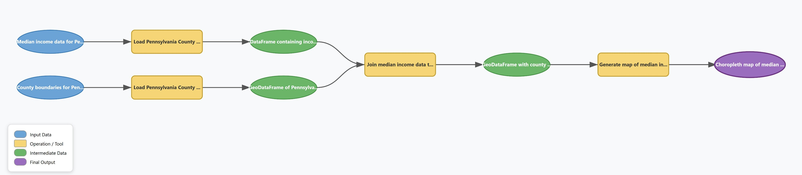
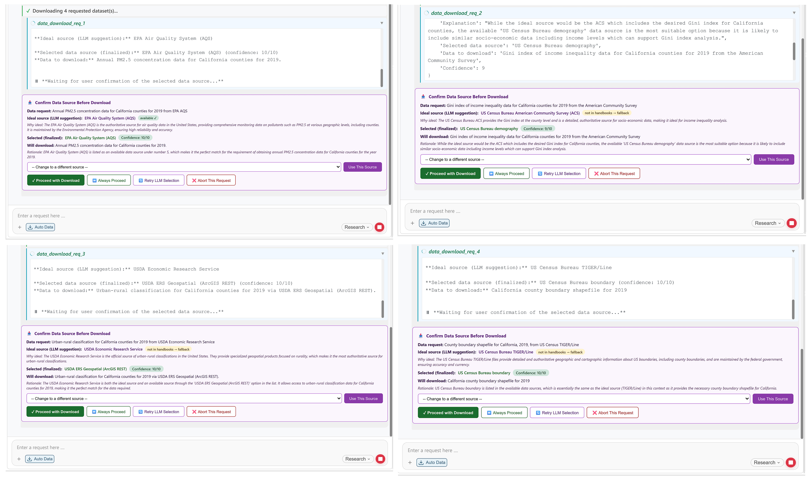
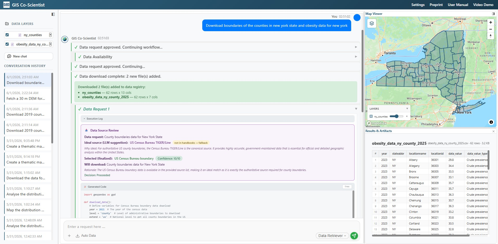
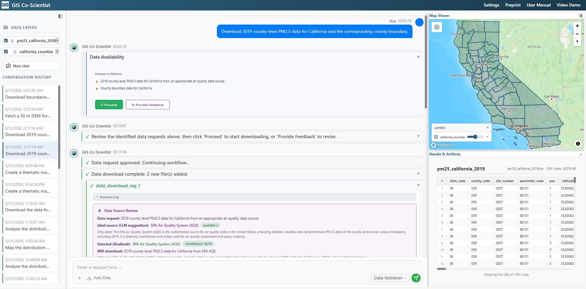
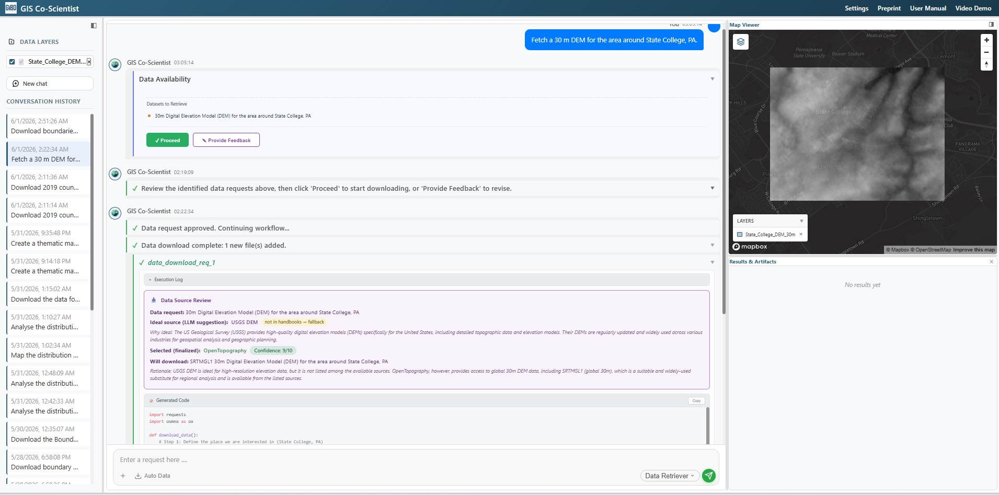
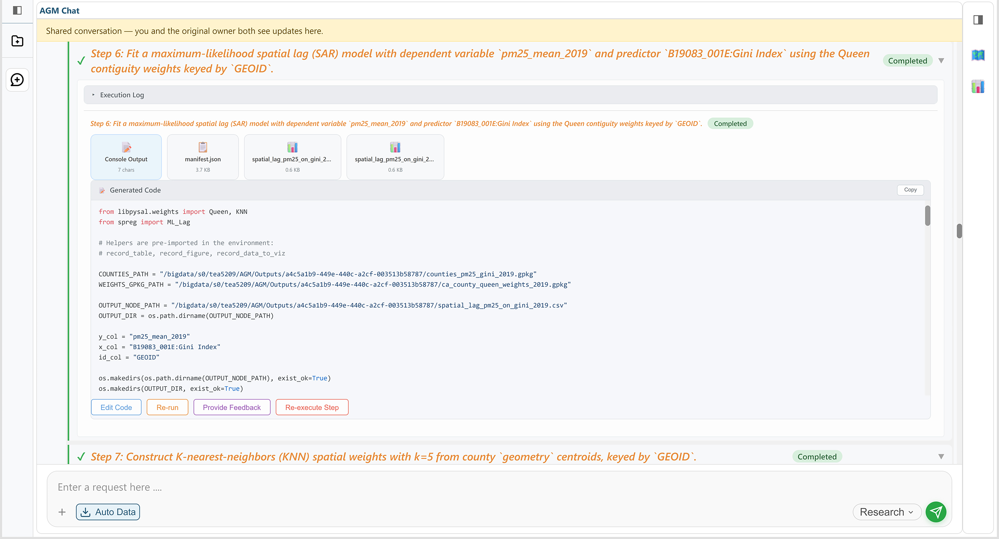
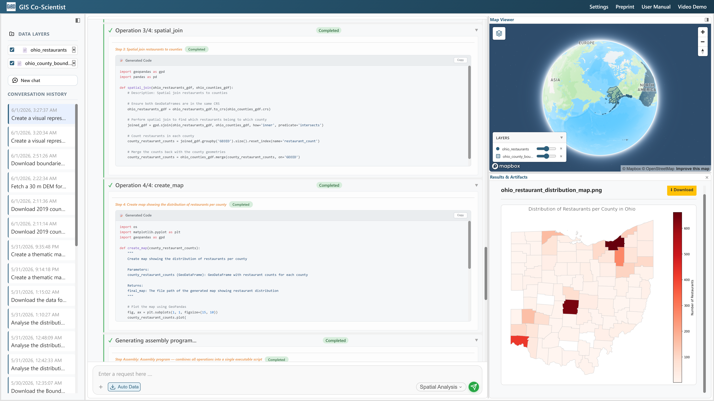
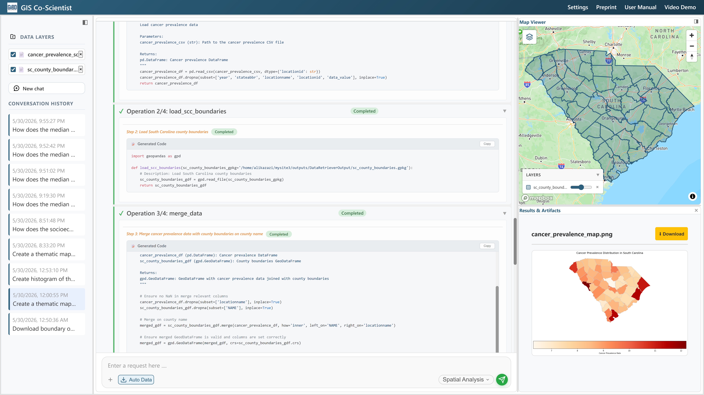

What is GIS Co-Scientist?
GIS Co-Scientist is a multi-agent framework for autonomous geospatial scientific inquiry, retrieving geospatial data, running spatial analyses, and producing full research manuscripts through a single conversational interface.
There are two ways to use it:
- Desktop app (recommended) - for Windows and macOS. See Installing the Desktop App.
- WebUI - runs in your browser, with nothing to install. See Using the WebUI.
GIS Co-Scientist has four working modes that you switch between depending on the type of task you want the system to run:
Data Retriever
Find and download geospatial datasets from built-in public sources.
Spatial Analysis
Run a specific spatial analysis on your data.
Research
The full pipeline: research plan generation, spatial modeling, interpretation, and manuscript writing.
Chat
Conversational Q&A
Installing the Desktop App
The desktop app is the recommended way to use GIS Co-Scientist. It runs on Windows and macOS in its own window, and your conversations, uploads and outputs stay on your computer.
Windows
Requires 64-bit Windows 10 or 11 and about 900 MB of free disk space. No administrator rights are needed.
GIS-CoScientist-Setup-<version>.exe
from the Windows download page.%LOCALAPPDATA%\Programs\GIS Co-Scientist and is added to the Start menu.
The installer also checks for the Microsoft Edge WebView2 runtime, which the app needs (it is already part of most Windows 10 and 11 computers).macOS
There are two builds: arm64 for Apple Silicon (M1 and later) and x86_64 for Intel Macs.
To check which Mac you have, open the Apple menu → About This Mac.
GIS-CoScientist-<version>-<arch>.dmg for your Mac
from the Apple Silicon or
Intel download page..dmg and drag GIS Co-Scientist into
Applications.- macOS 15 Sequoia and later: click Done on the message, open System Settings → Privacy & Security, scroll down to Security, and click Open Anyway next to GIS Co-Scientist. Enter your password, then click Open Anyway again.
- macOS 14 Sonoma and earlier: right-click (or Control-click) the app in Applications, choose Open, then click Open again.
Updating and uninstalling
- Update: install the newer version over the old one (on macOS, replace the app in Applications). Your conversations, uploads and outputs are kept.
- Uninstall (Windows): Settings → Apps → Installed apps → GIS Co-Scientist →
Uninstall. Your conversations, uploads and outputs are left in the install folder;
delete
%LOCALAPPDATA%\Programs\GIS Co-Scientistto remove them too. - Uninstall (macOS): drag the app from Applications to the Trash. Your data is in
~/Library/Application Support/GIS Co-Scientist; delete that folder to remove it too.
Using the WebUI
If you cannot install the desktop app, use the WebUI in your browser.
Quick Start
Open the desktop app (recommended) or the WebUI, then follow these steps.
sk-) into the
API Key field, and click Save Key.
See API Key for how to get one, or for the backup option if you only want to try the system.API Key
GIS Co-Scientist needs an API key to run its language-model calls. Use your own OpenAI API key. A GIBD key is only a backup for users who want to test or try out the system. There is a single API Key field in Settings, and the app automatically detects which type you entered.
Getting a key
| Key type | When to use it | Where to get it |
|---|---|---|
| OpenAI API key (recommended) | For all regular use | At platform.openai.com/api-keys - sign in, then create a secret key. |
| GIBD key (backup) | Only to test or try out the system | At gibd.online - create an account or sign in, then request a key. |
Entering your key
UI Layout Overview

Left sidebar
- Top row: New chat starts a fresh conversation (see Conversation History and Sharing), and the ◧ button collapses the sidebar.
- Conversations: your saved conversations under Recent, with filter and sort controls.
- Data Sources: a second tab listing the data sources the assistant can retrieve from (see Adding a New Data Source).
Center (Chat area)
The middle panel is the conversation itself: the assistant's messages and a multi-line input box at the bottom. Below the input box is a toolbar:
- ＋ Add data - upload a dataset (same as the button in Data Layers).
- Mode selector - choose the working mode, and switch Autonomous and Auto Data on or off (see Choosing a Mode).
- Model selector - shows the model. Changing it does not change the model that runs (see LLM Models used).
- Send - submit your request (also doubles as a Stop button while running).
Each stage of a run appears in the chat as a card. Its Tokens chip shows how many tokens the stage's language-model calls have used so far, and it keeps counting through re-runs, revisions, result analysis and manuscript drafting. Click the chip to see the stage's input, output and total tokens, the number of calls, and a per-call table naming the model used. The totals are saved with the conversation.
Right (layers, map and results)
The right region is stacked top to bottom. The ◨ button in the Data Layers header collapses the whole right panel.
- Data Layers (top) - every dataset uploaded, downloaded, or produced in this conversation. The button adds a layer, and clicking the Data Layers title collapses or expands the list (see Data Layers).
- Map Viewer (middle) - an interactive map that renders data layers.
- Results and Artifacts (bottom) - analysis outputs, tables, figures, statistics, and report downloads. Clear it with the × button. Drag the divider between the map and this panel to resize them.
Settings
Opened from the Settings button.
API Key
Enter, show/hide, save, or clear your API key (your OpenAI key, or a GIBD key as a backup) - covered in API Key.
Data Source Keys
Some data sources (e.g. the U.S. Census, EPA AQS) require their own API keys. This section lets you store those keys once so you're not asked again:
- When a download needs a key you don't have, the system prompts you inline in the chat. Whatever you enter is saved here automatically.
- You can also add keys ahead of time: type the key name (e.g.
US_Census_demography_key) and its value, then click Add. - Saved keys are listed and can be removed individually.
See Data Retrieval Mode for exactly which sources need a key and where to get one.
Data Layers
Adding a data layer
Click the button (Data Layers header, top of the right panel) or the ＋ in the chat toolbar to open the Add Data Layer dialog. Browse for the file(s), and click Add Layer.
Supported formats
| Type | Extensions | Notes |
|---|---|---|
| GeoJSON | .geojson | Vector features. |
| GeoPackage | .gpkg | Single-file vector store. |
| Shapefile | .shp .shx .dbf .prj | Select all components at once, or zip them. |
| Zipped shapefile | .zip | A ZIP containing the shapefile parts. |
| Tabular | .csv .xlsx .parquet | Joined to geometry during analysis. |
| Raster | .tif .tiff | Imagery / elevation grids. |
.shp, .shx, .dbf and .prj together in the file picker.The layer drop-down menu
Each layer in the Data Layers list has a context menu (click the layer / its menu control) with these actions:
- Details - name, file, size, type, and when it was added.
- Show Attribute Table - browse the layer's records and columns. The attribute table is being displayed in the Results & Artifacts panel.
- Load on Map Viewer - render the layer on the interactive map.
- Preview in Results Panel - a quick look in the Results & Artifacts panel.
- Download - save the layer to your computer.
- Remove Layer - delete it from this conversation.
A visibility checkbox on each layer toggles whether it's drawn on the map.
Result layers and reloads
- Results go to the map. When a Spatial Analysis run finishes, its vector outputs are added to Data Layers and drawn on the Map Viewer, and the run's main output opens in Results and Artifacts.
- Layers survive a reload. A layer you add from your computer is saved to the conversation right away, and a Spatial Analysis run's map outputs are saved as conversation files. Reloading the page or reopening the conversation brings them back. A layer you remove stays removed, until you add it again, for example by clicking its download tile or using Add to Map on a result.
- Follow-up requests can use result layers. Layers in the list, including results added with Add to Map, are sent with your next message. For example, after a run that creates county centroids you can ask for "100 m buffers around the centroids" and the system reuses that layer instead of computing it again.
Conversation History and Sharing
Conversation History
- Conversations are listed in the left sidebar, where you can filter, sort, and pin them. Open the ⋯ menu on a conversation to rename, export, or delete it.
- Saved on your computer: conversations stay available if you replace your API key or switch between an OpenAI and a GIBD key. A key must be saved in Settings for the list to appear.
- Not synced: entering the same key on another computer does not bring your conversations there. Use export and import instead.
- Uploaded files and generated artifacts are stored with the conversation, so reopening it restores its state.
- Deleting is permanent: the messages, uploaded data and outputs are removed from your computer. Export the conversation first if you may need it again.
- In the WebUI: conversations are saved on the server against your API key, so entering the same key in another browser brings them back.
- New chat starts a fresh conversation with its own data layers and workspace.
Sharing a conversation
Sharing a conversation on the Desktop app
To share a conversation from the desktop app, send it as a file:
.zip
with the messages, uploaded data and outputs is saved in your Downloads folder..zip to the other person, or
copy it to your other computer..zip.The imported conversation is a separate copy: the recipient can continue, rename, or delete it, and neither person sees the other's later changes. Importing a conversation that is already in the list opens the existing one. Importing one you deleted restores it as it was in the file.
Sharing a conversation on the WebUI
?conversation=<id>).Someone who opens it with their own key joins as a collaborator in the same workspace, so both of you see updates. Only the owner can rename or delete the conversation.
Choosing a Mode
Open the mode dropdown (bottom-right of the input box, labeled with the current mode) and select one:
| Mode | Usage | Section |
|---|---|---|
| Data Retrieval | Download data only - no analysis. | Data Retrieval Mode |
| Spatial Analysis | Run a direct spatial analysis on your data. | Spatial Analysis Mode |
| Research | Run the full workflow and draft a manuscript. | Research Mode |
| Research (no planning) | Run the research workflow without a research plan. | Research (no planning) |
| Single Agent | Let one agent run the whole research workflow. | Single Agent |
| Chat | Ask conversational questions, no workflow. | Chat Mode |
Autonomous mode
Inside the mode dropdown is an Autonomous toggle. When on, the system auto-approves its own plans and proceeds through checkpoints without pausing for human confirmation - useful for hands-off, end-to-end runs. When off (the default), it stops at each major checkpoint so human can review, revise, or approve.
LLM Models used
GIS Co-Scientist is a multi-agent system, so a single run is handled by more than one language model - each step makes its own model call. In the current release every one of those calls uses GPT-6 Luna. Each call's model and reasoning effort are set individually in the application's configuration, so a single step can be moved to a different model without affecting the rest.
| Mode | Operations / Stages | Model |
|---|---|---|
| Data Retriever |
|
GPT-6 Luna |
| Spatial Analysis |
|
GPT-6 Luna |
| Research |
|
GPT-6 Luna |
| Chat |
|
GPT-6 Luna |
The reasoning effort is the model's default. Calls that use tools are sent with reasoning turned off, because GPT-6 Luna does not accept tools and reasoning together. Click a stage card's Tokens chip to see which model each of its calls used.
Geoprocessing Workflow
Before writing any code, GIS Co-Scientist constructs an explicit geoprocessing workflow. The geoprocessing workflow is represented as a directed graph where spatial input data → geoprocessing operations / tools → and output data are connected. Each analytical objective is decomposed into a sequence of spatial operations and the output of one step becomes the input for the next step. This geoprocessing workflow serves as an executable blueprint for any geospatial task.

Adding a New Data Source
Users are allowed to register your own data sources so the assistant can retrieve from them. You can also propose a source for the shared data sources that every user has access to (see Sharing a data source).
Opening the Data Sources panel
Click the Data Sources button (bottom-right of the screen by default). It opens a full-panel view on the right.
The launcher can be dragged up the right edge to dock it as a vertical tab.
The two tabs
| Tab | What it shows |
|---|---|
| My Sources | The sources you've added, plus the option to add a new one. |
| Shared Sources | Read-only list of shared sources available to every user. |
.toml
Adding a data source
On My Sources, click ＋ Add data source. There are three ways to add one:
| Option | Use it when |
|---|---|
| Import a handbook | You already have a handbook file. |
| Create a handbook | You want to fill in the form yourself. |
| Generate with AI | You want the AI to read the source's documentation and draft it for you. |
The desktop app asks which one you want first. The WebUI opens the form directly, with Import and Generate with AI at the top. All three lead to the same form, where you review the fields before clicking Add Source.
Import a handbook
In the desktop app, drag a file onto Import a handbook, or click it to browse. In the WebUI, click Import. What gets filled in depends on the file:
| File | What it fills |
|---|---|
.toml, .json | Every field the file contains. |
.py | Code Example only. |
.txt, .md | Handbook / Instructions only. |
Create a handbook
Fill in the form by hand:
| Field | Purpose |
|---|---|
| Source Name (required) | A clear, human-readable name (e.g. NOAA Tides). |
| Brief Description (required in the desktop app) | One or two sentences - the assistant uses this to decide when to pick the source. |
| Website | The data source's official site (shown as a link in the detail popup). |
| Handbook / Instructions | Technical notes: base URL, endpoints, auth, parameters, gotchas - one
per line. Use {YOUR_KEY_NAME} where an API key is needed. |
| Code Example | A working Python snippet that downloads from the source and saves a file. |
If the source needs a key, see Sources that need an API key. For what to write in each field, see Creating a data source handbook.
Generate with AI
This uses your OpenAI API key, or a GIBD key as a backup. To choose the model or test with your own retrieval task, use Handbook Studio instead.
Creating a data source handbook
A handbook is a complete data source definition which provides the technical information that GIS Co-Scientist needs to retrieve data from one specific source.
A handbook serves a single data source and is maintained on its own, so adding, updating, or removing a source is plug-and-play. It is normally saved in a structured file format (.toml).
Writing a good handbook
A handbook consists of three required parts: data_source_name, brief_description, and handbook.
| Field | Description |
|---|---|
data_source_name | A short, meaningful, human-readable name - for example
OpenStreetMap, US_Census_demography, US_Census_boundary,
OpenTopography, OpenWeather, COVID_NYT, or
ESRI_world_imagery. |
brief_description | One line describing the source so the assistant knows when to use
it. Include the critical scope - geographic extent and time period. E.g. for
COVID_NYT: "US COVID-19 data by the New York Times. Cumulative counts of COVID-19 cases and deaths
in the United States, at the state and county level, from 2020-01-21 to 2023-03-23." |
handbook | This is the most critical section of the handbook. This includes the technical requirements for downloading from the data source - one requirement per line. Cover the access URL and endpoints, the parameters and their allowed values, the column/attribute names. |
Other fields of the handbook include: Code example, website
| Optional field | Description |
|---|---|
code_example | A short, working Python snippet that downloads data from this source and saves it to a file. The assistant uses it as
a verified template, so keep it self-contained: put the logic in a download_data() function with a final line that calls it, use
{KEY_NAME} placeholders for any credentials, and save to a plain relative filename. See example |
website | The data source's official homepage. It's shown in the source's details for reference and lets users quickly verify or learn more about the provider. |
Beyond these fields, a few best practices for the handbook (instructions):
- Be explicit about endpoints and parameters. State the exact URL pattern, and for each parameter say what it means and what it accepts (allowed values, min/max, defaults).
- Use placeholders for credentials. Write
{KEY_NAME}wherever a key or login is needed - never hard-code a real key. (The placeholder names must match the credential names you list - see Sources that need an API key.) - Surface errors. Instruct the code to raise on failure (an invalid key, a bad response) rather than silently swallowing exceptions, so problems are visible.
.toml (the ⤓ icon), edit its handbook and code, and import it again.Generating a handbook with Handbook Studio
Rather than writing a handbook by hand, you can have one generated and tested. Click Handbook Studio in the header to open it. It works through one source at a time, in three sections:
The handbook review card has two buttons. One downloads the handbook as a .toml you can
re-import later. The other adds it to My Sources as a private data source, and asks first if a source with
the same name already exists. Sessions can be saved, shared by link, and duplicated from the Studio's header.
Sources that need an API key or credentials
Turn on This source needs an API key or credentials and list the credential name(s),
comma-separated (e.g. EPA_AQS_email, EPA_AQS_key).
- ensures each name appears as a
{name}placeholder in the handbook, so its value can be substituted at retrieval time
The actual value will be provided at runtime when the system ask for it. You can also provide it under Settings → Data Source Keys.
Sharing a data source
A source you add is private and available to the system immediately. Sharing it is optional, and you keep your own copy either way.
Sharing a data source on the Desktop app
You can share a source in two ways: send it as a file to specific people, or submit it to the shared catalog for everyone.
Send it as a file
.toml file.Submit it to the shared catalog
The desktop app proposes your source to the shared catalog on GitHub as a pull request. You need a free GitHub account.
The card shows where the source stands:
| On the card | Meaning |
|---|---|
| Private | Your own copy, saved on your computer. It stays Private after you submit it. |
| Submit | Proposes the source to the shared catalog. |
| In review ↗ | You have submitted the source. Opens the pull request on GitHub, where you can see whether it was merged and any comments. The link stays after the review ends. |
| Resubmit | Sends your latest edits as a new pull request. |
Sharing a data source on the WebUI
Turn on Allow to be shared with other users when adding the source, or click Share on its card later. An admin reviews it before it is added to the shared data sources. The card shows a status badge:
| Badge | Meaning |
|---|---|
| Private | Saved to your account only. |
| Pending | Submitted and awaiting an admin's decision. |
| Shared | Approved and published to the shared data source for everyone. |
| Rejected | An admin declined it (with an optional reason shown in the popup). A Resubmit button lets you send it back after edits. |
Editing, downloading, and deleting
- Edit - open a card's popup and click Edit to reopen the form pre-filled; renaming is handled cleanly.
- Download - the ⤓ icon on any card (or in the popup header) exports the source as
.toml. - Delete - the × on your own cards removes the source. In the desktop app, a pull request you already opened stays open; close it on GitHub to withdraw it. In the WebUI, any pending submission is withdrawn. Built-in/shared sources are read-only.
Modes
Data Retrieval Mode
Data retrieval mode: Find and download geospatial datasets from public data sources, without running any analysis.
How to use it
The "Auto Data" toggle
The Auto Data switch, in the mode dropdown under Autonomous, controls whether data needed for a request is downloaded automatically. It is on by default. With it on, the system pulls required datasets without asking each time; with it off, it pauses for human confirmation before downloading. The switch appears only for Spatial Analysis and Research, the modes that may need extra data. Data Retrieval mode always downloads, so the switch is hidden there.
Available data sources
These public sources are built in. The system picks the right one from your request, but you can name a source explicitly. You can also register your own sources - see Adding a New Data Source.
| Source | What it provides | Coverage | API key? |
|---|---|---|---|
| US Census - Boundaries | Administrative boundaries: nation, state, county, tract, block group, metro areas. | USA | No |
| US Census - Demography | Population, gender, income, education, race and other socio-economic variables. | USA | Yes (free) |
| CDC PLACES | Chronic-disease, health-outcome, risk-behavior and disability estimates (county / tract / city / ZCTA). | USA · BRFSS 2019–2023 | No |
| EPA AQS | Air-quality monitoring (PM2.5, PM10, ozone, NO₂, SO₂, CO, lead…), daily and annual. | USA · 1980s–present | Yes (email + key) |
| USDA ERS Geospatial | Food access and environment, rural classifications, income, jobs, people, SNAP (county / tract). | USA | No |
| USGS Earthquake | Earthquake events via the FDSN Event web service (custom searches). | Global | No |
| FEMA National Flood Hazard Layer | Official flood hazard zones, base flood elevations, FIRM panels, levees. | USA and territories (where digital flood maps exist) | No |
| NASA FIRMS | Active fire and thermal hotspot points from MODIS, VIIRS and Landsat. | Global · MODIS from about 2000, VIIRS from about 2012 | Yes (free) |
| OpenStreetMap | Administrative boundaries, street networks, points of interest. | Global | No |
| OpenTopography | Global DEMs (15 m–1000 m): SRTM, AW3D30, NASADEM, COP30, GEBCO, and more. | Global | Yes (free) |
| ESA WorldCover | Land cover at 10 m resolution, 11 classes. | Global · 2020 and 2021 | No |
| OpenWeather | Historical, current and forecast weather data. | Global | Yes (some data needs a paid plan) |
| COVID (NYT) | Cumulative COVID-19 cases and deaths, state and county level. | USA · Jan 2020 – Mar 2023 | No |
| Natural Earth | Public-domain cartographic vector and raster layers (1:10m / 1:50m / 1:110m) for base maps. | Global | No |
| ESRI World Imagery | Satellite image tiles (Web Mercator, EPSG:3857) for export and mosaicking. | Global | No |
Where to get the free keys
| Source | Sign-up page |
|---|---|
| US Census (Demography) | api.census.gov/data/key_signup.html |
| EPA AQS | aqs.epa.gov/aqsweb/documents/data_api.html (registers an email + key) |
| OpenTopography | portal.opentopography.org/myopentopo (500 calls / 24 h on the free tier) |
| NASA FIRMS | firms.modaps.eosdis.nasa.gov/api/map_key |
| OpenWeather | home.openweathermap.org/users/sign_up (free key; historical and hourly data need a paid plan) |
Enter these once under Settings → Data Source Keys (or when prompted), and they're reused thereafter.

Downloading multiple datasets
You can ask for several datasets in one request (e.g. "download 2019 county boundaries and county-level obesity rates for California"). The system retrieves each one and adds them as separate data layers. Each is independently mappable and downloadable, and ready to be merged later in Spatial Analysis or Research mode.
Feedback and approval prompts
Data retrieval is interactive. Human may be asked to provide input at two points:
- Source confirmation - if the system isn't fully sure which source to use, it asks you to use the proposed source, retry with a different one, or abort.
- Download fallback - if a download fails or a needed file is missing, you can choose to proceed with available data, upload the missing file yourself, or abort the workflow. Uploaded files are audited automatically and folded into the run.

Examples
Example 1 - County boundaries and obesity data for New York
Request: "Download boundaries of the counties in New York state and obesity data for New York."

Example 2 - PM2.5 and county boundaries for California
Request: "Download 2019 county-level PM2.5 data for California and the corresponding county boundary."

Example 3 - 30 m DEM around State College, PA
Request: "Fetch a 30 m DEM for the area around State College, PA."

Spatial Analysis Mode
Spatial Analysis: Run a specific spatial analysis - the system plans the geoprocessing workflow, writes the code, and executes it.
How to use it

Reviewing and re-running
- Inspect - every step shows the exact geoprocessing operation and the code that implements it.
- Revise - give feedback in plain language and the workflow or code is regenerated.
- Re-run steps - individual steps can be re-executed without restarting the whole analysis.
- Build on the result - send a follow-up request in the same conversation. The result layers on the map are sent with it, so the next analysis can start from them.
Examples
Example 1 - Distribution of restaurants by county in Ohio
Request: "Create a visual representation that displays the distribution of restaurants across each county in Ohio."


Example 2 - Cancer prevalence in South Carolina
Request: "Create a thematic map showing the distribution of the cancer prevalence in South Carolina."


Research Mode
Research: The complete pipeline - from research question to a drafted manuscript.
Research mode is the most comprehensive mode. Give it a research question and (optionally) data, and it works through the entire scientific process, pausing for human approval at each major checkpoint (unless Autonomous is on).
Starting a research run
- Select Research in the mode dropdown.
- Provide data in one of two ways: add your files as data layers, or turn on Auto Data in the mode dropdown so the system downloads what is missing. If you provide no data and Auto Data is off, the system asks you to do one or the other.
- Decide whether to turn on Autonomous. With it off (the default), the run stops at each checkpoint below. With it on, the run approves its own checkpoints and continues to the manuscript. It still stops if a data source needs an API key it does not have.
- Type your research question and send it.
The workflow stages
A research run passes through the stages below in order. Each stage appears in the chat as its own card with live progress.
- Generate: it inspects the datasets with its tools and drafts the plan as objectives, each with a hypothesis and a sequence of analysis steps.
- Review: a second pass checks the draft against the actual data (column names, join keys, and whether each step's inputs are produced by an earlier step) and corrects it.
- Finalize: every step's inputs are linked to a dataset or to an earlier step's output, and every output is given a file location.
- Each step is assigned to the agent best suited to it (for example, the Data Agent for joins and cleaning, the Modeling Agent for statistical and spatial models).
- The agent writes Python code for the step and runs it. Code, console output, and produced files appear in a tile for that step.
- If the code fails, a debugger investigates the error (checking columns, file paths, coordinate systems, and earlier outputs), repairs the code, and runs it again, up to two repair attempts per step.
- If a step still fails or produces empty data, any later step that depends on its output is skipped rather than run on missing input. You can fix and re-run these steps at Checkpoint 4.
Human-AI collaboration in the research mode
GIS Co-Scientist incorporates human-in-the-loop checkpoints at the stages where expert judgment most strongly conditions the validity of downstream inference. At each checkpoint you can either approve and let the system proceed, or provide feedback that re-prompts the responsible agent with targeted revisions - all before any external code is generated or executed.
| Checkpoint | When it appears | With Autonomous on |
|---|---|---|
| 1 - Task breakdown | After question understanding | Proceeds automatically |
| 2 - Data source selection | For each data request, with Auto Data on | Proceeds automatically, but still stops for a missing or rejected API key |
| 3 - Research plan review | After plan generation | Plan is approved automatically |
| 4 - Execution review | After all objectives have run | Skipped |
Checkpoint 1 - Task breakdown and data requirements
The first checkpoint follows the research question understanding stage, where the breakdown and the data requirements are shown, along with whether the data you supplied is sufficient. Two options are given:
- Proceed - instructs the system to move on to retrieval and planning.
- Provide feedback - you can give feedback in natural language describing what's missing or wrong. Only the parts your feedback asks about are revised, and you can review again.
If data is missing and Auto Data is off, the card offers to turn Auto Data on for this run, or to continue with only the data you have. If the breakdown judges your data sufficient, nothing is downloaded, even with Auto Data on, and the chat notes which requests were skipped.
Checkpoint 2 - Data source selection (optional)
A second checkpoint is triggered by the Geospatial Data Retrieval Agent once it has selected an appropriate data source for each unmet data requirement. The chosen source is shown with the rationale for its selection and a confidence score. Before any download code is generated, you can:
- Proceed with the suggested source, or Always Proceed to accept the agent's choice for the remaining requests in this run.
- Change the source to another one from the list, or generate a new skill (handbook) for a source the system does not know yet.
- Enter an API key if the source needs one. Keys you enter are reused for later requests to the same source. See also Sources that need an API key.
- Retry or abort the request.
After the download, you can review the files that were delivered before the run continues. If a request fails, you can retry it, skip it and continue with the data you have, or stop the run.
Checkpoint 3 - Research plan review
The third checkpoint occurs during research plan generation. Through a dedicated revision interface you can operate on the finalized plan before approving it for execution.
The planner treats every dataset in the conversation as a candidate. It checks each one's area, time period, units and content against the question, and plans only with the datasets that fit. Where nothing fits, it flags a data gap rather than stretching an unfit dataset. It records every candidate as used or not used, with a reason, and the plan reviewer checks this data fitness first. In the plan review you can:
- Edit the plan directly - change an objective's title or hypothesis, edit step descriptions, and add or delete steps. When you delete a step, the system re-links the remaining steps so that none of them depends on the deleted step's output. The geoprocessing workflow is redrawn to match.
- Provide feedback - give natural-language feedback describing the desired changes to the plan, and the system regenerates a revised plan based on your input.
- Approve Plan - starts code generation and execution.
Checkpoint 4 - Execution review
The fourth checkpoint occurs immediately after objective execution. An execution checkpoint surfaces a per-step summary of statuses (completed, error, or skipped), errors, and produced artifacts. In each step, you can do any of the following:
- Edit code - you can edit the code by editing the text directly.
- Re-run the step - if a step failed or produced unsatisfactory output, you can re-run it without affecting other steps.
- Provide feedback - you can give natural-language feedback describing any desired change to the code; the system regenerates the code for that step based on your input, and you can re-run it - without affecting other steps in the workflow.
- Re-execute Step - you can re-execute a step to refresh its output or apply changes.
After re-running steps, click Update Status to refresh the summary. Click Proceed to continue to result analysis and manuscript drafting.
Post-hoc step revisitation
At any point after execution you may return to an individual step and supply natural-language feedback describing the desired modification - a methodological refinement, a parameter adjustment, an alternative model specification, or a corrected interpretation. You may then choose to propagate the revised outputs into the manuscript, at which point the Reporting Agent selectively regenerates only the sections whose input has changed - preserving editorial continuity while keeping the final document faithful to the most recent analytical state.
Other research modes
The mode dropdown has two simpler versions of Research mode. They are meant for comparison: they show what planning and multiple agents add to the results. For regular work, use Research.
| Research | Research (no planning) | Single Agent | |
|---|---|---|---|
| Who does the work | Specialized agents | Specialized agents, without the Planning Agent | One agent |
| Research plan | Generated, reviewed, and shown for approval | None | Written by the agent, with no separate review or approval |
| Data | Uploaded, or downloaded with Auto Data | Uploaded, or downloaded with Auto Data | Uploaded only |
| Checkpoints | 1 to 4 | 1, 2 and 4 | None |
| Autonomous | Available | Available | Not used, as the run never pauses |
| Manuscript | Yes | Yes | Yes |
Research (no planning)
The same workflow as Research mode with the Planning Agent switched off. After the question breakdown, the Modeling Agent writes code for the whole question in one step. Data retrieval, debugging, result analysis and manuscript drafting work as in Research mode.
Single Agent
One agent does everything, from understanding the data and planning to analysis and the manuscript. Upload your data before you send the question. The run goes straight through without review pauses, and each script it runs appears in the chat as its own card. Use the Stop button to end it early. A run can also end without a manuscript if the agent reaches its limit of 200 turns or stops before saving one.
Examples
Example 1 - Spatial inequalities in air pollution exposure and income inequality in California
Request: "How do spatial inequalities in PM2.5 exposure across California counties vary with income inequality (Gini) in 2019, and does the spatial relationship vary by urban–rural classification?"


Example 2 - Mobility-mediated socioeconomic and mental health analysis
Request: "How do spatial patterns of mobility (place visitation) mediate the relationship between neighborhood social economic status and depression prevalence across the counties of South Carolina"


Example 3 - Proximity to hazardous waste facilities and asthma prevalence in North Carolina
Request: "How does proximity to hazardous waste facilities influence spatial patterns of asthma prevalence across census tracts of North Carolina, and how do these relationships vary spatially by socioeconomic and demographic context?"


The manuscript deliverable
The reporting pipeline produces a structured research paper with standard academic sections:
- Title and Abstract - including structured Background / Methods / Results / Conclusions and keywords.
- Introduction - framed with literature and study objectives, including the gap in prior work that the study addresses.
- Methods - data sources, study area, and analytical methods, following the approved research plan.
- Results - quantitative findings, written from the actual step outputs, with the figures and tables from the catalog.
- Discussion and Conclusion - interpretation, comparison with prior studies, significance, and implications.
- References - compiled from the papers cited in the text.
Before drafting, the Reporting Agent searches Semantic Scholar using your question and the objective titles, and sorts the papers it finds into foundational, methodological, regional, and gap-evidence studies. The Introduction and Discussion cite from this set. Figures and tables are renumbered in the order they appear in the text.
If one section fails to generate, a placeholder is inserted and the remaining sections are still written. You can regenerate the failed section later.
The finished manuscript can be downloaded as Markdown, Word (.docx), or PDF. Individual stages - analysis, manuscript, specific steps - can be re-run or refined without starting over. When you re-run the manuscript after changing steps, only the sections whose inputs changed are rewritten: changes to the plan update the Title & Abstract, Introduction, and Methodology, and changes to execution results update the Title & Abstract, Results, Discussion, and Conclusion.
Video Demonstration
Video demonstrations of selected cases are available here.
Chat Mode
Chat: Plain conversational QandA - no workflow is launched.
Use Chat mode to ask questions, clarify concepts, or plan your approach before committing to an analysis. For example:
- "What's the difference between Global and Local Moran's I?"
- "Which data source should I use for county-level income?"
- "How should I frame a study of air quality and rurality?"
Chat mode answers directly without generating or running code.
Tips and Troubleshooting
| Symptom | What to check |
|---|---|
| Nothing runs / "API key required" | Add a valid OpenAI API key (sk-), or a backup
GIBD key (gibd-) if you are only trying the system, in Settings and click Save Key. |
| A data download is rejected for "missing key" | The source needs a free API key - add it under Settings → Data Source Keys, or enter it when prompted. See Data Retrieval Mode. |
| Wrong dataset retrieved | Be explicit about year, geography level, and variable; or name the source directly. Use the source-confirmation prompt to retry. |
| Shapefile won't load | Include all components (.shp .shx .dbf .prj) or upload them as a single
.zip. |
| My conversations disappeared | Desktop app: make sure an API key is saved in Settings and the sidebar filter is set to All conversations. WebUI: enter the same key you used when you created them. |
| Can't delete a shared conversation (WebUI) | Only the owner can delete/rename; collaborators have shared access only. |